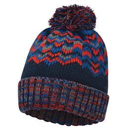

Vyriška ir moteriška apranga | Jack Wolfskin kokybiška apranga - ROVANA.LT
- Vyriška sportinė apranga internetu | Išpardavimas | OTTO
Vyriška sportinė avalynė. Vyriška apranga visada buvo ir išliks svarbi, tačiau be geros vyriškos avalynės neapsieisi. Pagrindinė mada vis dar diktuojama pagal New Balance, turbūt pačius populiariausius kedus. Žinoma, pagal Jūsų pasirinkimą, turime ir kitokių variantų, kurie taip pat Jums patiks. - Vyriška apranga - Terrasport.lt
Pradžia PRIEDAI VYRIŠKA APRANGA. Rodoma 1–22 iš 24. Kategorijos. Rodyti 36 46 60 -35%. Pasirinkti savybes. Uždaryti ... - Tamsiai mėlyna vyriška striukė "Multer" | Apranga | Akcija ...
Apranga. Prekiaujame "Jack Wolfskin" apranga, kuri yra viena iš pirmaujančių laisvalaikio drabužių, avalynės ir kuprinių tiekėjų Europoje. "Jack Wolfskin" aprangos pagrindinė idėja yra suderinti geriausią įmanomą funkcionalumą su puikiu komfortu. - Vyriška sportinė avalynė internetu | Sportsman.lt
Vyriška apranga Rūšiuoti pagal Pavadinimas (A - Z) Pavadinimas (Z - A) Kaina (didėjančiai) Kaina (mažėjančiai) 16 prekių(-ės) puslapyje 32 prekių(-ės) puslapyje 64 prekių(-ės) puslapyje Visos - Vyriška apranga - Dviratininkų apranga - Prosport.lt
Vyriski drabuziai, vyriska apranga, vyriskos striukes, svarkai, vyriska apranga, rubai vyrams, apranga internetu, stilingi rubai vyrams. Apranga internetu pigiau. ... - Vyriška apranga | Produkto kategorijos | Z-Sport
Vyriška dygsniuota bomber stiliaus striukė. Dvi šoninės kišenės.,dvi vidinės kišenės.Medžiaga: viršutinis sluoksnis 100% nailonas, užpildas 100% ... - RubaiVyrams.lt|Rubai vyrams internetu pigiau |Vyriska apranga
Vyriška sportinė apranga internetu. Kokybiškos prekės ir profesionalus aptarnavimas. Pasirinkimas iš daugiau nei 500.000 prekių! Nedelskite ir įsigykite vyrišką sportinę aprangą internetu pigiau. - Vyriška apranga - Aistra
Vyriška apranga. Parduotuvėje 50style.lt rūpinamės Tavimi ir Tavo poreikiais. Todėl suteikiame Tau firminius produktus už patrauklias kainas. Vyrai tikrai ras pas mus idealią sau aprangą, kuri praturtins jų stilių. Skiriamasis mūsų parduotuvėje pasiekiamų produktų ženklas yra visų pirma aukšta kokybė. - Vyriška apranga - BOLF
Vyriška apranga. Pirkti vyriškus drabužius geriausia per internetinę parduotuvę.Galite tikėtis tiek labai didelio vyriškų drabužių pasirinkimo, tiek ir palankių kainų. Tiesiog pasirinkite tinkamą kirpimą, patikrinkite dydį ir sumokėkite už užsakymą, kad per kelias dienas gautumėte pakuotę tiesiai į namus. - Vyriška Apranga parduotuvė 50Style
Vyriška apranga Showing 1–24 of 216 results Apranga. Craft Jacket Parkas M vyriška striukė 1905982 – 9999 ...

Susisiekite dabar: +370 687 59246 Klauskite Prisijungti Krepšelyje x 0 (tuščia)
Prekių nėra
Turi būti nustatyta Pristatymas 0,00 € VisoPirkti
Prekė sėkmingai pridėta į krepšelį Kiekis Viso Krepšelyje yra 0 prekė (-ės). Krepšelyje yra 1 prekė. Prekės viso Viso pristatymas Turi būti nustatyta Viso Tęsti apsipirkimą Pereiti prie apmokėjimo Meniu Prekiniai ženklaiADMIRAL
AKARA
ALPINO
ATK
Baffin
Baladéo
BESTARD
BLACK FOX
BRESSER
BYRON
CARPEX
COLMIC
CORMORAN
CROSSNAR
CUKK
DAIWA
DRAGON
DUEL
ELEKTROSTATYK
Energizer
EXPERT
FLADEN
FLAMBEU
GARBOLINO
GENLOG
GERBER
GERMINA
HAYABUSA
HELLE
HERAKLES
HERBERTZ
JackWolfskin
KamadoCLUB
Kiwami
LADYA
LiteXpress
MARES
MCUSTA
Mycamp
MYRAN
NEBO
NEVERLAND
Nextorch
Nieto
Nils Master
OPTIMUS
OZOOM
POLYVER
PROWESS
Puma-tec
RECTA
ROBINSON
RYOBI
SAKURA
SEA FOX
SELECT
SERT
SIGG
Stanley
Tandem Baits
Thermowave
TOYOKUNI
TRIMM
Vaino
VICTORINOX
YO-ZURI
ZIPPO
Zojirushi
/Produktai/Apranga Menu Žvejyba Meškerės Ritės Blizgės Pavadėliai plėšrioms žuvims Kabliukai Vobleriai Valai Plūdės Jaukai ir priedai Minkšti masalai Dėžės ir žvejo krepšiai Dėklai Graibštai Stovai Kibimo indikatoriai Šėryklos Gyvi masalai Masalai žūklei jūroje Suktukai, segtukai, žiedeliai, svareliai Žieminė žvejyba Žvejybos įrankiai Valtys, Variklai, Elektronika Aksesuarai Apranga Apranga Apranga žvejybai Termo rūbai Laisvalaikio apranga Slidinėjimo apranga Aprangos aksesuarai Veido kaukės APRANGA ŽVEJYBAI TERMO RŪBAI STRIUKĖS LAISVALAIKIO APRANGA AKSESUARAI Avalynė Avalynė Batai žvejybai Medžiokliniai batai Turistiniai batai Laisvalaikio batai Žieminiai batai Avalynės aksesuarai ir priežiūros priemonės BATAI ŽVEJYBAI MEDŽIOKLINIAI BATAI TURISTINIAI BATAI LAISVALAIKIO BATAI ŽIEMINIAI BATAI AVALYNĖS AKSESUARAI Turizmas ir laisvalaikis Turistinis inventorius Palapinės ir skėčiai Miegmaišiai Turistiniai Kilimėliai, pagalvėlės Turistinės kėdės Turistinės lovos - gultai Turistinės Viryklės Rūkyklos Komposai Turistinės lempos Gertuvės, termosai, termo puodeliai Kelioniniai termosai Pietų termosai ir priešpiečių dėžutės Termo gertuvės Gertuvės Vaikiškos gertuvės Termo puodeliai KamadoClub kepsninės ir kepimo priedai KamadoClub kepsninės KamadoClub kepsninių dalys Kamado kepsninių priedai kepimui ir rūkymui Kamado kepsninių priedai aksesuarai PEILIAI Kišeniniai peiliai Mėtymui skirti peiliai Medžiokliniai peiliai Turistiniai peiliai Daugiafunkcinės replės, įrankiai Virtuviniai peiliai ir virtuvės reikmenys Kąstuvai- kirviai Peilių Galąstuvai Kišeniniai Peiliai su lietuviška simbolika Peilių aksesuarai Laisvalaikio prekės Prožektoriai Ugnies žiebtuvėliai Akiniai Zippo žiebtuvėliai Pirmos pagalbos rinkiniai Žiūronai Vandens pramogos Kaukės Plaukmenys Vandens batai Kojinės Kuprinės Kuprinės Turistinės kuprinės Miesto kuprinės Krepšiai ir rankinės Kuprinės dviratininkams Kuprinės vaikams Kuprinės kompiuteriui Kosmetinės ir kiti aksesuarai MOKYKLINĖS KUPRINĖS TURISTINĖS KUPRINĖS KUPRINĖS KIEKVIENAI DIENAI KREPŠIAI IR RANKINĖS KUPRINĖS DVIRATININKAMS AKSESUARAI Naujienos Akcijos Kontaktai Dovanų kuponas Atsiskaitymo būdai AprangaApranga
Apranga žvejybai Striukės žvejybai Marškinėliai Liemenės Kelnės žvejybai Kepurės žvejybai Pirštinės Kojinės Kostiumai Bridkelnės Termo rūbai Vyriški termo rūbai Termo rūbai moterims Laisvalaikio apranga Striukės Vyriškos striukės Vasarinės striukės Žieminės vyriškos striukės Softshell vyriškos striukės Hardshell vyriškos striukės Flisinės striukės Striukės nuo vėjo ir lietaus Paltai ir parkos vyrams 3 in 1 striukės Moteriškos striukės Vasarinės striukės Žieminės moteriškos striukės Softshell moteriškos striukės Flisinės striukės Striukės nuo vėjo ir lietaus Paltai ir parkos moterims Džemperiai Moteriški džemperiai Vyriški džemperiai Marškinėliai Trumpomis rankovėmis Ilgomis rankovėmis Marškiniai Kelnės Šortai Sijonai Liemenės Slidinėjimo apranga Vyriška slidinėjimo apranga Vyriškos slidinėjimo kelnės Vyriškos slidinėjimo striukės Moteriška slidinėjimo apranga Moteriškos slidinėjimo striukės Moteriškos slidinėjimo kelnės Slidinėjimo kojinės Aprangos aksesuarai Kepurės RUDUO / ŽIEMA PAVASARIS / VASARA Kepurės su snapeliu Skrybėlės Vaikiškos kepurės vasarai Kojinės Šalikai Pirštinės Aprangos priežiūros priemonės Veido kaukės DiržaiFiltruoti:
Kraunama...
Apranga
Apranga
Prekiaujame "Jack Wolfskin" apranga, kuri yra viena iš pirmaujančių laisvalaikio drabužių, avalynės ir kuprinių tiekėjų Europoje.
"Jack Wolfskin" aprangos pagrindinė idėja yra suderinti geriausią įmanomą funkcionalumą su puikiu komfortu.
Pažangios aprangos technologijos, funkcionalumas bei puikus gamtos ir miesto derinys – tai "Jack Wol...
Apranga
Prekiaujame "Jack Wolfskin" apranga, kuri yra viena iš pirmaujančių laisvalaikio drabužių, avalynės ir kuprinių tiekėjų Europoje.
"Jack Wolfskin" aprangos pagrindinė idėja yra suderinti geriausią įmanomą funkcionalumą su puikiu komfortu.
Pažangios aprangos technologijos, funkcionalumas bei puikus gamtos ir miesto derinys – tai "Jack Wolfskin" išskirtinumas.
Apranga skirti vyrams ir moterims. Labai platus aprangos asortimentas: striukės, paltai,megztiniai, džemperiai, liemenės, marškinėliai, kelnės, šortai, taip pat rasite ir aprangos aksesuarus. Rūbus įvairioms veikloms ir hobiams: žvejybai, slidinėjimui, žygiams, sportui, alpinizmui, turizmui, stovyklavimui.
Nuo 1981 m.JACK WOLFSKIN įkvėpė žmones ieškoti nuotykių, mėgautis laisve lauke ir tyrinėti gamtinį pasaulį.
Daugiau Rodyti: Tinklelis Sąrašas Ankstesnis 1 2 3 ... 31 Tęsti Greita peržiūra 139,95 €
Vyriškas džemperis JACK WOLFSKIN SKYLAND...
Vyriškas džemperis JACK WOLFSKIN SKYLAND CROSSING Art.NR.1203752
139,95 € Į krepšelį Daugiau Pageidavimai Greita peržiūra 109,95 €Vyriška SOFTSHELL striukė neperpučiama...
Vyriška Soffshel striukė sukurta reikliems turistams eiti į žygius arba mėgstantiems plaukioti baidarėmis. Pagamintas iš STORMLOCK audinio, kuris yra atsparus vandeniui, vėjui. Jis taip pat yra labai stiprus ir labai kvėpuojantis. Maroon red #1304001
109,95 € Į krepšelį Daugiau Pageidavimai Greita peržiūra 99,95 €Moteriškas džemperis JACK WOLFSKIN PINE LEAF
Moteriškas džemperis JACK WOLFSKIN PINE LEAF Art.Nr.1706751
99,95 € Į krepšelį Daugiau Pageidavimai Greita peržiūra 289,95 €Vyriška striukė JACK WOLFSKIN JASPER 3IN1...
Šilta ir universali striukė žiemai su padidinta judėjimo laisve. Ši fantastiška striukė saugos jus nuo vėjo ir išliks sausa net ir dėvint ją per stiprų lietų ar pūgą.
289,95 € Į krepšelį Daugiau Pageidavimai Greita peržiūra 309,95 €Vyriška striukė JACK WOLFSKIN JASPER 3IN1...
"JASPER 3IN1" išorinė striukė, pagaminta iš TEXAPORE audinio, nepraleidžia net menkiausio vėjo ar lietaus, šilta vidinė striukė iš vilnos saugo kūno šilumą, o specialūs užtrauktukai užtikrins ventiliaciją. Abi striukės dalis galima dėvėti kartu arba atskirai.
309,95 € Į krepšelį Daugiau Pageidavimai Greita peržiūra 199,95 €Vyriška žieminė striukė Jack Wolfskin...
"NORRLAND" yra klasikinė Vyriška žieminė striukė 3-in-1 derinys, kurį sudaro vandeniui atspari išorinė striukė ir šiltas vidinis švarkas iš vilnos. Striukė skirta dėvėti rudens ir pavasario sezonu. Art.NR.1110701
199,95 € Į krepšelį Daugiau Pageidavimai Greita peržiūra 199,95 €Vyriška žieminė striukė Jack Wolfskin...
"NORRLAND" yra klasikinis Vyriška žieminė striukė 3-in-1 derinys, kurį sudaro vandeniui atspari išorinė striukė ir šiltas vidinis švarkas iš vilnos. Striukė skirta dėvėti rudens ir pavasario sezonu. Art.Nr.1110701
199,95 € Į krepšelį Daugiau Pageidavimai Greita peržiūra 199,95 €Vyriška žieminė striukė Jack Wolfskin...
"NORRLAND" yra klasikinė Vyriška žieminė striukė 3-in-1 derinys, kurį sudaro vandeniui atspari išorinė striukė ir šiltas vidinis švarkas iš vilnos. Striukė skirta dėvėti rudens ir pavasario sezonu. Art.Nr.1110701
199,95 € Į krepšelį Daugiau Pageidavimai Greita peržiūra 189,95 €Vyriška žieminė striukė Jack Wolfskin...
Ši žygiams skirta Vyriška žieminė striukė yra atspari vandeniui, vėjui ir puikiai izoliuoja šilumą. Šiai striukei pasirinkta "TEXAPORE OXFORD" papildoma ir patikima audinio versija. Ši striukė sukurta tam, kad susidorotų su bet kokiomis oro sąlygomis ir būtų atspari atmosferos poveikiui.
189,95 € Į krepšelį Daugiau Pageidavimai Greita peržiūra 189,95 €Vyriška žieminė striukė Jack Wolfskin...
Ši žygiams skirta Vyriška žieminė striukė yra atspari vandeniui, vėjui ir puikiai izoliuoja šilumą. Šiai Vyriškai žieminei striukei pasirinkta "TEXAPORE OXFORD" papildoma ir patikima audinio versija.
189,95 € Į krepšelį Daugiau Pageidavimai Greita peržiūra 159,95 €Vyriškas džemperis JACK WOLFSKIN ROBSON
Vyriškas džemperis JACK WOLFSKIN ROBSON Art.Nr.1705821
159,95 € Į krepšelį Daugiau Pageidavimai Greita peržiūra 159,95 €Vyriškas džemperis JACK WOLFSKIN ROBSON
Vyriškas džemperis JACK WOLFSKIN ROBSON Art.Nr.1705821
159,95 € Į krepšelį Daugiau Pageidavimai Ankstesnis 1 2 3 ... 31 TęstiNemokamas pristatymas Lietuvoje užsisakius virš 99 Eur
Prekių pristatymas Lietuvoje per 2-3 D.D.
Pinigų gražinimo garantija
Prekių pirkimas nesiregistravus
Saugus apsipirkimas
Informacija
Naujos prekės Perkamiausios Mūsų parduotuvės Susisiekite su mumis Apie mus Taisyklės ir naudojimo sąlygos Karjera Lojalumo programa Prekių pristatymas, grąžinimas ir taisyklės Svetainės žemėlapisMano paskyra
Mano užsakymai Mano suteiktos nuolaidos Mano adresai Mano asmeninė informacija Mano kuponaiParduotuvės informacija
UAB Rovana, Sudervės g.8J, Avižieniai, Vilniaus rajono savivaldybė. (Didmeninė prekyba ir el.parduotuvė) Susisiekite dabar: +370 687 59246 El. paštas: info@rovana.lt Rovana - Žūklės, Laisvalaikio ir Turizmo Prekės © 2020 Visos teisės priklauso UAB Rovana